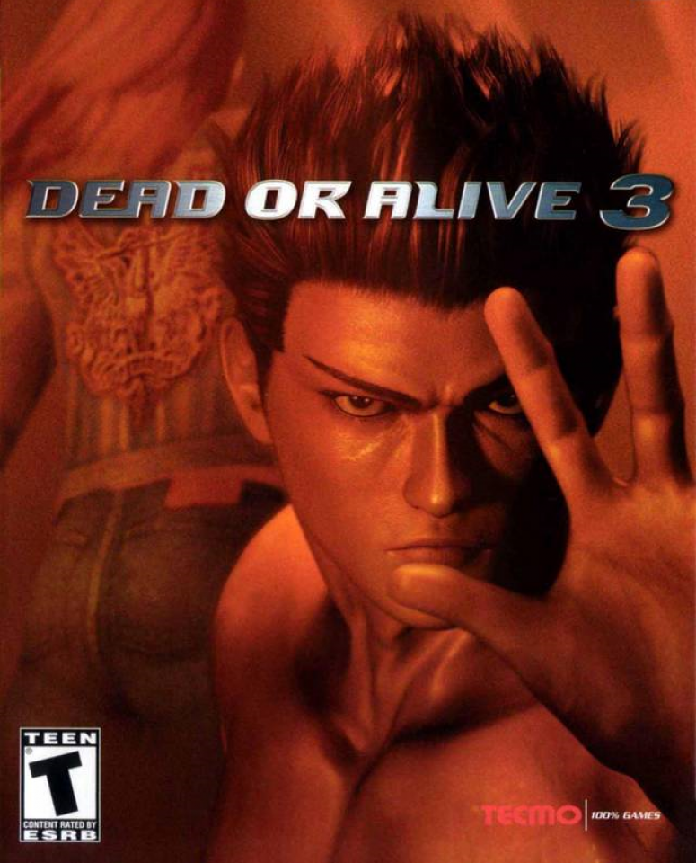
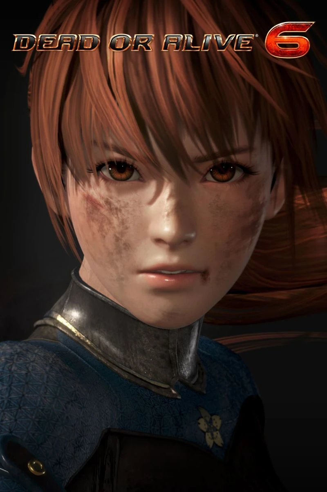

- Dead or Alive
Dead or Alive (also known as DOA or DOA1) is the first installment in the Dead or Alive series.
Developed by Team Ninja and published by Tecmo, Dead or Alive was first released in arcades in 1996, using the Sega Model 2 system board and was later ported onto the Sega Saturn home console in Japan on October 9, 1997.
In 1998, a PlayStation version of Dead or Alive was released in Japan, North America, and Europe, with a different graphics and fighting engine, new background music, and two additional characters.
Dead or Alive ++ (デッドオアアライブ++ Deddo oa Araibu Purasu Purasu) was also released in 1998. This arcade-only release used the Sony ZN-1 arcade board and, while graphically similar to the PlayStation port of Dead or Alive, plays more like Dead or Alive 2. The game introduced a bigger emphasis on stuns and to that end, two separate hold systems were included, one inside and one outside of critical state.
In 2004, the Sega Saturn version was ported onto the Xbox as part of Dead or Alive Ultimate.
Dead or Alive was followed by the series' first sequel Dead or Alive 2 in 1999.
- Dead or Alive 2
Dead or Alive 2 (also known as DOA2) is the second main installment (3rd overall) the Dead or Alive fighting series. It debuted in the arcades in October 1999, and was later ported to the Sega Dreamcast on February 29, 2000. The game was released again in Japan on March 30, 2000 for the PlayStation 2. Later the same year, an updated version of the title, DOA2: Hardcore, was released for the PlayStation 2 across all territories.
The graphics and gameplay were enhanced from the previous game, and based on a better game engine. Running on the Sega NAOMI arcade board, it allowed the characters and stages to appear less angular and more detailed. The story involved a narrative continuation of the first game, taking place shortly after the events of Dead or Alive.
On August 22, 2012, DOA2: Hard*Core was made available as a downloadable game on the Japanese PlayStation Network.[2] The North American version was released to the US PlayStation Network on March 24, 2015.
- Dead or Alive 3

Dead or Alive 3 (also known as DOA3) is the third main installment (5th overall) of the Dead or Alive fighting series. Developed by Team Ninja and published by Tecmo, Dead or Alive 3 was first released on November 15, 2001 in America as a launch title for the Xbox. It was the first title of the series not to be released in the arcades, and the last game in the series to be rated "T for Teen" until Dead or Alive Dimensions was released.
Running on the Xbox's hardware, Dead or Alive 3 offered an improved game engine and superior graphics compared to its predecessors, particularly in its more detailed and expanded environments. The game was critically acclaimed and a commercial success upon release, selling over 2 million copies worldwide, becoming the best selling title in the franchise, and one of the top 10 best selling Xbox games. The European and Japanese versions of the game were released months later, featuring additional content and updates that weren't featured in the North American version.
Dead or Alive 3 would later become backwards compatible with the Xbox 360. On November 10, 2021, the game was made available to download on Xbox Live worldwide. On November 15, 2021, the game was made backwards compatible with the Xbox One and Xbox Series X/S.
- Dead or Alive 4
The story of the game focuses on the continuing war between the Mugen Tenshin Ninja Clan and DOATEC, and Helena Douglas taking over the mantle of DOATEC as its new president, determined to fight against the corruption within the enormous organization. The game's story mode introduces the player to new characters and opponents via combat which can then be played in the game's other modes.
DOA4 was generally well received, with an average score of 85/100 on Metacritic.
- Dead or Alive 5

Dead or Alive 5 Last Round (also known as DOA5 Last Round, or simply Last Round) is the final update to the Dead or Alive 5 series.
It was released in February 2015 on consoles and was released in March 2015 on PC, with the exception of the later added "online" mode. It has been confirmed that downloadable content and characters from Dead or Alive 5 Ultimate will be compatible with Last Round.
Dead or Alive 5 Last Round not only has the largest character roster, but also the largest costume and stage selection in a Dead or Alive game to date.
- Dead or Alive 6

Dead or Alive 6 (also known as DOA6) is the sixth main versus-fighting installment in the Dead or Alive franchise. It was announced on June 8th 2018 for PlayStation 4, Xbox One, and PC. It was released worldwide on March 1st, 2019. It was also released in the Arcades in Japan on July 18, 2019.[1]
Running on a new engine for the eighth generation of consoles, new features include visible damage on the fighters during the course of the fight. New mechanics introduced are the Fatal Rush and Break Gauge while the sweat effects from Dead or Alive 5 return and are more pronounced.